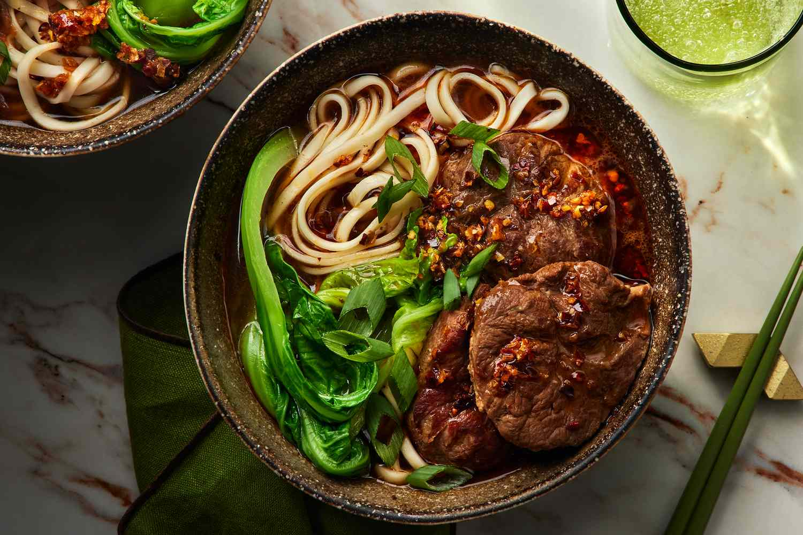

This classic soup gets its richness from meltingly tender braised beef.
Ingredients
- 6 tablespoons neutral cooking oil (such as vegetable oil), divided
- 2 pounds boneless beef shank, sliced into 1/2-inch-thick rounds or 2 pounds oxtails (about 3 large)
- 6 garlic cloves